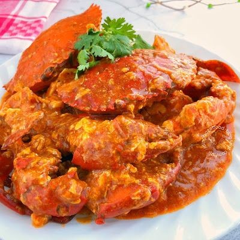

Zamboanga City
Introduction
Zamboanga City, a vibrant coastal metropolis in the Philippines, is renowned for its captivating blend of natural beauty and rich cultural heritage. Nestled on the Zamboanga Peninsula, it boasts stunning beaches with the iconic pink sand of Sta. Cruz Island, a testament to its unique marine ecosystem. The city's history is a fascinating tapestry woven from indigenous Subano traditions, Malay influences, and the legacies of Spanish and American colonization. This confluence of cultures is reflected in its architecture, cuisine, and the diverse lifestyles of its people. Beyond its natural wonders, Zamboanga City offers a glimpse into a dynamic society where ancient traditions coexist with modern progress, making it a truly unforgettable destination. Visitors can explore historical landmarks like Fort Pilar, stroll along the picturesque Paseo del Mar, and immerse themselves in the lively atmosphere of the city's bustling markets.
Tourist Spots
Fort Pilar
Fort pilar is the number one historical landmark in zamboanga city. It was built by the Spaniards as a defense fortress during the Spaniards colonization.
Paseo Del Mar
One of the most stunning parks in the country in Zamboanga City is Paseo Del Mar. One may see the most breathtaking sunsets in the city as well as a breathtaking view of Basilan Island and Santa Cruz here. From Paseo del Mar, one could also observe the city's active port.
Zamboanga City Hall
The Zamboanga City Hall is the seat of the local government of Zamboanga City. The National Historical Commission of the Philippines considers the city hall building as a National Historical Site.
Sta. Cruz Island
Great Santa Cruz Island is a small inhabited island in Zamboanga City in the southern region of the Philippines that is famous for its pink coralline sand.
Culture
The Zamboanga Hermosa Festival, also known as Fiesta Pilar, is a month-long, annual cultural and religious festival held in Zamboanga City, Philippines, in honor of the city's patron saint, Nuestra Señora de la Virgen del Pilar, with the main feast day on October 12. Here's a more detailed look at the festival

Costumes Represent
During the Zamboanga Hermosa Festival, costumes reflect the city's Hispanic influence, culture, and traditions, with participants having creative freedom to depict these aspects through their attire.Famous Food
Curacha, an unusual crab that is found in the waters of Sulu and Zamboanga. A lot of things make it unique – from its shape, its orange color (that stays the same raw and cooked), its flavor and the famous Alavar sauce that the crabs are often cooked in.
Zamboanga Hermosa Hymn
The "Zamboanga Hermosa Hymn" is a local hymn about Zamboanga, written by Vicente M. Orendain in the early 20th century, and is known for its praise of the city and its Chavacano language.
© Jessa Tinguha